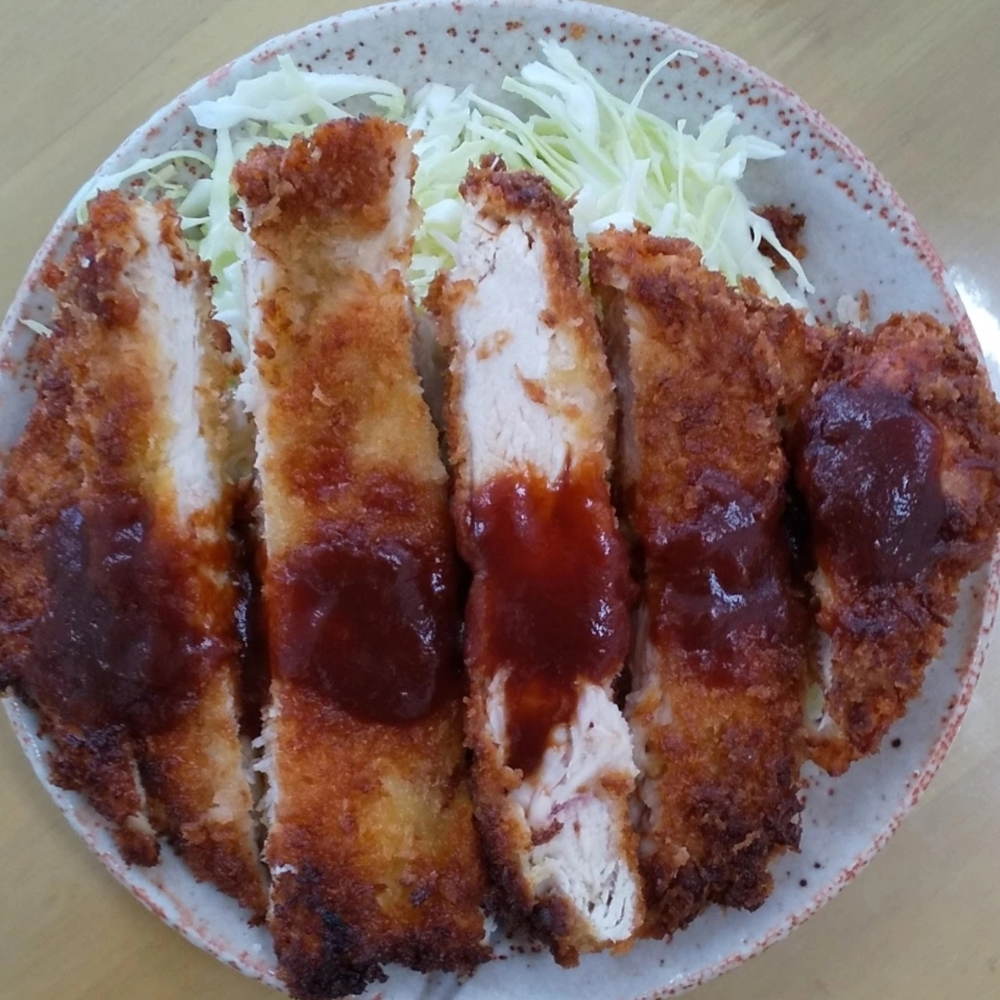
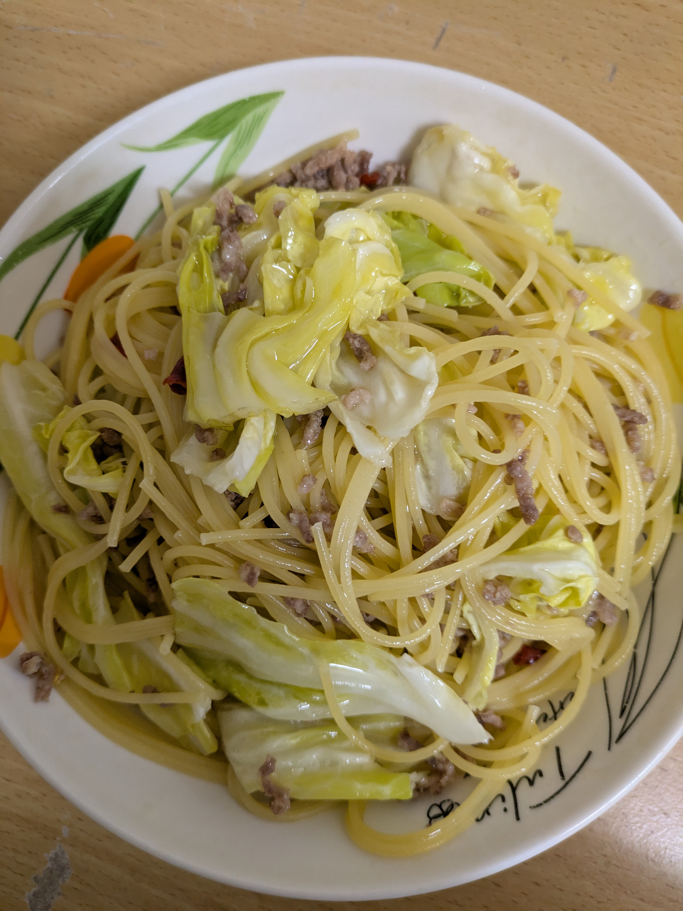
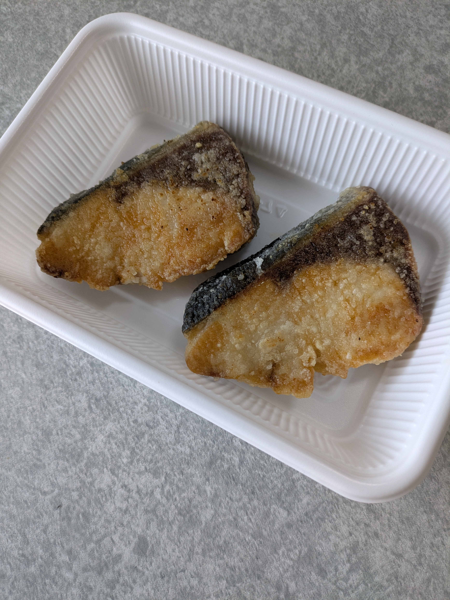
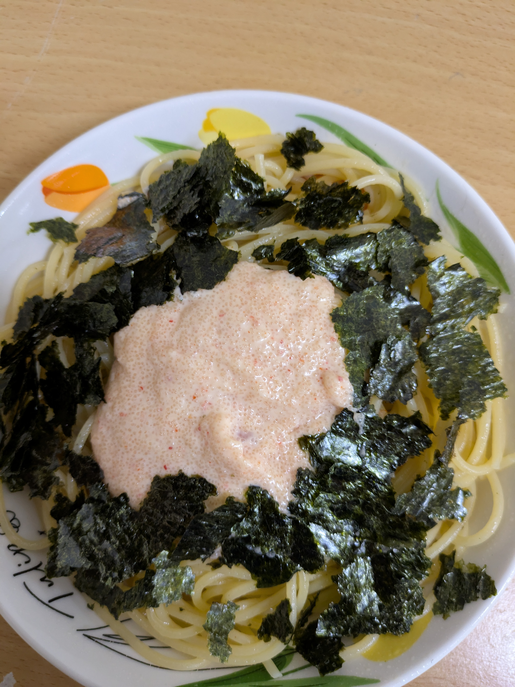

The Ultimate Recipe Agent - Guide Page
現代社会において、私たちは常に時間に追われています。仕事、勉強、趣味、 tender日々の雑務。その中で「自炊」という行為は、心身の健康を維持するために不可欠でありながらも、時に大きな負担として私たちの肩にのしかかってきます。「今日の献立は何にしよう」「冷蔵庫の余り物で何が作れるだろう」「美味しいものを食べたいけれど、レシピを調べるのも面倒くさい」。そんな誰もが抱く日常の小さな絶望や妥協を打破するために立ち上がったのが、YouTubeチャンネル「フライドチキン みんなの料理レシピ代行者」です。
このチャンネルの根底にあるコンセプトは、非常にシンプルでありながら強力です。それは「あなたの代わりに、私が理想の料理を形にする」ということ。単なる料理のハウツー動画を提供するのではない、視聴者一人ひとりの食に対する欲求や、「作ってみたいけれどハードルが高い」と感じる心理的な壁を代わりに乗り越える「代行者」として存在しています。動画を開けば、そこには無駄のない洗練された調理プロセスと、見ているだけで胃袋を刺激される極上の映像美が広がっています。料理が苦手な人にとっては、まるで自分が料理上手になったかのような疑似体験を提供し、料理が好きな人にとっては、次なる創作意欲を掻き立てるインスピレーションの源泉となることを目指しています。

さらに、本チャンネルの強みはその圧倒的な「親しみやすさ」と「プロフェッショナルな視点」の融合にあります。紹介されるレシピは、特殊な高級食材や一般家庭にない専門的な器具を必要とするものはほとんどありません。スーパーマーケットで手に入る身近な食材を使いながらも、少しの工夫、適切な火加減、そして食材を美味しく仕上げるための「ロジック」を丁寧に解説することで、誰が作っても確実に美味しく仕上がるよう設計されています。料理という日常の営みを、最高にエキサイティングでかっこいいエンターテインメントへと昇華させる試みが、このチャンネルから始まっているのです。
チャンネル名にも冠されている「フライドチキン」という言葉。これには、ただの好物という枠を超えた深い意味とこだわりが隠されています。フライドチキンという料理は、世界中で愛されているポピュラーなメニューでありながら、実は非常に奥が深く、調理の腕前やこだわりが顕著に現れる料理の一つです。鶏肉の部位選び、下味の付け方、スパイスの配合、衣のクオリティ（カリカリ感やザクザク感）、揚げる際の温度管理。これらすべての要素が完璧に噛み合ったとき、初めて人々の心を揺さぶる「至高の一品」が完成します。
私たちが目指すのは、まさにその「完璧なバランスの追求」です。フライドチキンを作るプロセスには、料理の基本であり奥義でもある要素がすべて詰まっています。肉の水分を保ちながらジューシーに仕上げるための科学的なアプローチや、油の温度変化をコントロールする技術は、他のあらゆる炒め物や揚げ物、焼き物にも応用が可能です。つまり、「フライドチキンを極める者は、すべての料理を制する」と言っても過言ではないのです。このチャンネルでは、その圧倒的なこだわりを象徴として掲げ、あらゆるレシピにおいて妥協のないクオリティを提示しています。

また、動画における「シズル感」の演出には並々ならぬ情熱を注いでいます。肉をタレに漬け込む瞬間の瑞々しい音、熱い油に投入した瞬間に弾ける激しいパチパチというサウンド、包丁がサクッと衣を割る心地よい手応え。これら視覚と聴覚を刺激する要素を最良の形でカメラに収め、視聴者の「食欲」をダイレクトに呼び覚まします。画面越しであっても、まるで目の前で揚げたてのチキンが湯気を立てているかのような臨場感を味わえること。それこそが、当チャンネルが他の料理動画と一線を画す、最大の特徴でありこだわりなのです。
「みんなの料理レシピ代行者」という名前の通り、このチャンネルの主役は動画の制作側だけではありません。チャンネルを支え、共にコンテンツを作り上げていく視聴者の皆さんこそが、もう一人の主役です。私たちは、コメント欄やSNSを通じて寄せられる「これが食べたい！」「あの料理の簡単な作り方を知りたい！」「話題のあのメニューを再現してほしい！」というリアルな声を何よりも大切にしています。一方的に動画を配信するプラットフォームではなく、双方向のコミュニケーションから新しいレシピが生まれる場所。それが本チャンネルのアイデンティティです。
リクエストを具現化するプロセスにおいて、代行者は徹底的な研究を行います。例えば「ハンバーグを肉汁たっぷりに作りたい」というリクエストがあれば、一般的なレシピをただ紹介するのではなく、どうすれば肉汁を内側に閉じ込められるのか、玉ねぎの切り方や炒め具合でどう味が変わるのかを検証します。視聴者の皆さんが自宅のキッチンで再現した際に、失敗するリスクを極限まで減らし、レシピをカスタマイズ（代行）するのです。これにより、動画を観た人は単なる観客から、実際に美味しい料理を生み出すプレイヤーへと進化することができます。

これまでに寄せられたリクエストの中には、定番の家庭料理から、少し手の込んだ多国籍料理まで、多岐にわたるアイデアが存在します。自分一人では作ろうと思わなかった料理でも、誰かのリクエスト動画をきっかけに挑戦してみたら新しい得意料理になった、という嬉しい報告も届いています。あなたの「食べたい」という小さな願いが、世界中の誰かの食卓を豊かにする最高のコンテンツへと変わる。そのワクワク感を、ぜひ一緒に体験してみませんか？
「フライドチキン みんなの料理レシピ代行者」は、これからも立ち止まることなく進化を続けていきます。今後は、さらに多様なジャンルの料理への挑戦はもちろんのこと、視聴者の皆さんとの繋がりをより深めるためのライブ配信や、特別なコラボレーション企画なども視野に入れています。また、単に「美味しい料理の作り方」を届けるだけでなく、食を通じたライフスタイルの提案や、調理器具・調味料の選び方といった、日々の料理がさらに楽しくなる周辺知識の発信にも力を入れていく予定です。
このチャンネルを100%楽しむためのステップは非常に簡単です。まずは、新着動画を見逃さないためにチャンネル登録を済ませ、通知をオンにすること。そして動画を観て少しでも「美味しそう」「作ってみたい」と感じたら、ぜひ高評価やコメントを残してください。皆さんのリアクションの一つひとつが、次の代行業務への最大のモチベーションになります。さらに、実際に動画のレシピを作ってみた際は、その感想やアレンジのアイデアをシェアしてください。あなたの発見が、また新しい動画のヒントになるかもしれません。

料理の常識を覆し、あなたの食卓をより豊かで刺激的なものにするために。「フライドチキン みんなの料理レシピ代行者」は、今日もあなたからのリクエストを待っています。さあ、次はどんな美味しい奇跡を一緒に起こしましょうか？